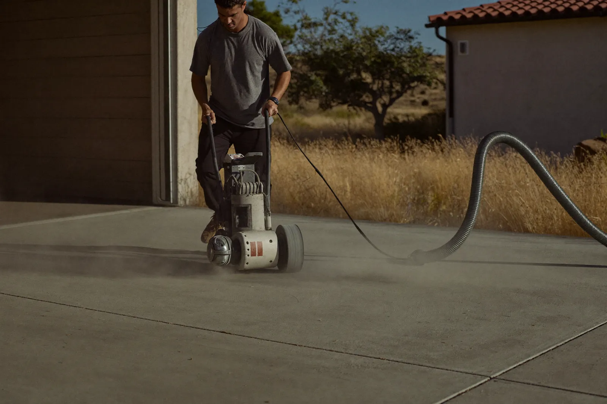

Diamond grinding, coating removal and slab profiling — the step that decides whether your floor lasts.
Call Now for a Free Estimate
Concrete grinding in Stockton is the step that decides whether a floor coating lasts ten years or lifts in one. We run it as part of every coating we install, and as a standalone service for homeowners stripping a failed floor and for contractors who want a slab profiled correctly before their own crew coats it.
Walk-behind and ride-on grinders fitted with diamond segments cut the top layer off the slab. A vacuum shroud pulls the dust straight into a HEPA extractor, which is what keeps the job from coating the rest of the house or the shop next door.
The target is a surface profile the industry calls CSP 1 to 2. The plain-language version: when the grinding is done the concrete should feel like 100-grit sandpaper and drink a splash of water within a minute. If water beads or just sits there, the slab is still sealed and it is not ready.
Grinding also flattens what is in the way — trowel ridges, old patch edges, high spots at control joints — so the finished floor sits level instead of telegraphing every repair.
Acid etching opens the pores of clean concrete, and on a fresh slab with no history it can be adequate. On a used garage floor it is not, for one specific reason: acid will not remove silicone or tire polymer. Years of parking leave both soaked into the surface. Etch over that and the acid simply washes around the contaminants, leaving them in place under your new coating as a built-in bond breaker.
Machine-troweled concrete has a second problem acid cannot solve. Power-troweling brings fine cement paste to the surface, creating a layer called laitance that is structurally weaker than the concrete below it. A coating bonded to laitance is bonded to something that is already going to let go.
There is a quick test you can run yourself. Sprinkle water on the slab: if it soaks in and darkens the concrete within a minute, the surface is open. If it beads up or sits on top, there is a sealer or a contaminant in the way and grinding is the only fix.
As a standalone service, grinding is quoted per square foot and depends almost entirely on what is on the floor before we start.
| Factor | Effect on your quote |
|---|---|
| Existing coating | Stripping thick epoxy takes several passes and more diamond wear than opening bare concrete |
| Glue or thinset | Mastic and tile adhesive load up diamond segments and slow the work considerably |
| Flatness required | Profiling for a flake floor is quicker than flattening for a glossy metallic |
| Access | Stairs, tight doorways and upper floors add equipment handling time |
| Slab hardness | Harder concrete wears segments faster and takes more passes |
When grinding is part of a coating we install, it is already inside the floor price rather than a separate line.
Diamond grinding both cleans and flattens. It takes down high spots, removes coatings and adhesives, and leaves a smooth open profile. It is the right call for garages, interiors and anywhere the finished floor needs to be flat — which is every residential job we do.
Shot blasting fires steel shot at the slab to texture it fast across large areas. It is quicker per square foot on a big warehouse and leaves a more aggressive profile, which suits thick industrial coatings. It does not flatten anything, though: it follows the contour of the floor, so trowel ridges and dips stay exactly where they are.
In practice, big industrial floors getting a high-build coating often get shot blasted, sometimes with grinding at the edges and corners the blaster cannot reach. Residential and any glossy finish gets ground.
Ready for the coating itself? Start with garage floor epoxy in Stockton or see all our services.
Far less than people expect. The grinders run with a shroud connected to a HEPA vacuum, so most of the dust never reaches the air. We still mask off doorways into the house, because a garage slab produces a lot of fine material and any of it that escapes travels.
Yes, and it is one of the most common calls we get in Stockton. Stripping a failed coating takes more passes and wears through diamond segments faster than opening bare concrete, so it is priced above a standard grind, but it leaves you with a slab that is genuinely ready to coat.
Sprinkle water on it. On open concrete the water soaks in and darkens the surface within about a minute. If it beads up or sits on top, there is a sealer or contaminant in the way, and no coating will bond until it is ground off.
Yes. We grind slabs as a standalone service for homeowners who want to coat the floor themselves and for contractors who want the profile done right before their own crew starts. You get a slab at a CSP 1 to 2 profile, cleaned and ready.
We measure the slab, test how it takes water, and hand you a written price before we leave. Free, no obligation.